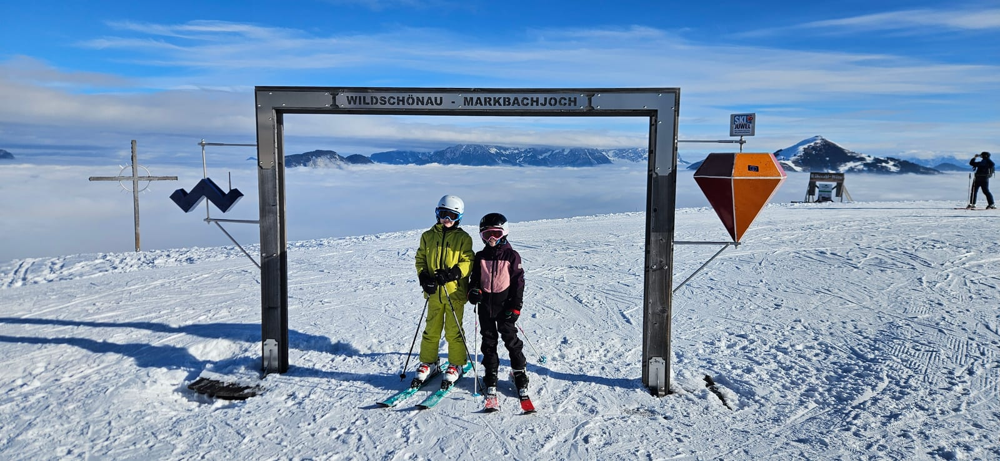

Berglsteiner See
15 Min. zu Fuß – Spazieren, Erholen und Staunen am smaragdgrünen Bergsee
So findet ihr zu uns – und was ihr rund um den Hof unternehmen könnt
Seen, Wanderwege und Ausflugsziele im Unterinntal – die meisten davon mit der Alpbachtal Card inklusive.
15 Min. zu Fuß – Spazieren, Erholen und Staunen am smaragdgrünen Bergsee
25 Min. zu Fuß – unser Tipp zum Baden, mit Liegewiese
Starten direkt am Hof – von leichten Spaziergängen bis zu anspruchsvollen Bergtouren
Das Inntal und Alpbachtal bieten erstklassige Radwege für alle Schwierigkeitsgrade
Mehrere Kletterrouten und Klettersteige in der näheren Umgebung
Kostenlose Bergbahnfahrten im Sommer – Bergrestaurants, Almhütten, Panoramawege
Badeanlage Alpbach (~20 km) und Hechtsee bei Kufstein (~20 km)
Fischreicher Inn direkt im Ort
Kräuterwanderungen, Pilze sammeln, Alpenblumen beobachten
Reiterhof in der Nähe, auf Anfrage erreichbar
20 Min. – Teil des Ski Juwel Alpbachtal Wildschönau mit 109 km Pisten
30 Min. – eines der größten Skigebiete Österreichs mit über 280 km Pisten
30 Min. – ein weiteres erstklassiges Skigebiet mit top Beschneiung
Mehrere Rodelbahnen in der Region – Abendrodeln auf beleuchteten Strecken
Gut präparierte Winterwanderwege rund um Breitenbach am Inn
Geführte Schneeschuhwanderungen in unberührter Winterlandschaft
Loipen in Wildschönau und Alpbach
Eisbahn in Kufstein (ca. 15 km)
Gemütliche Hütten, Spa in Alpbach

Beeindruckendes Kalkgebirge – Wilder und Zahmer Kaiser für Wanderer und Kletterer.
Ca. 20 km · 20 Min. mit dem AutoEine der mächtigsten Festungsanlagen Österreichs – 15 km entfernt.
Ca. 15 km · 15 Min. mit dem AutoKleinste Stadt Österreichs mit beeindruckendem Glashandwerk und mittelalterlichem Stadtbild.
Ca. 10 km · 10 Min. mit dem AutoEines der schönsten Dörfer Österreichs – bekannt für seine Blumenpracht und Tiroler Architektur.
Ca. 20 km · 20 Min. mit dem AutoTirols größter See – ideal für Segeln, Surfen und Panoramaschifffahrten.
Ca. 25 km · 25 Min. mit dem AutoEinkaufen, Restaurants, Cafés und das kulturelle Zentrum des Tiroler Unterlandes.
Ca. 15 km · 15 Min. mit dem AutoDie Tiroler Landeshauptstadt mit Goldenes Dachl, Hofburg und Bergisel-Skisprungschanze.
Ca. 40 km · 40 Min. mit dem Auto